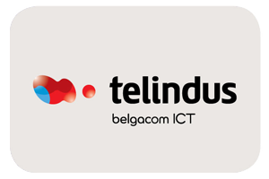

WORK EXPERIENCE¶
January 2013 - Present: Data Center and Digital Transformation Business Development and Presales Manager¶
{kind=link}
Acuntia (formerly known as TELINDUS) : One of the largest system integrators in Spain, producing a portfolio of solutions in the following areas: Virtualization and Data Center, Network Architecture, Video and Collaboration, Security and Mobility, and Innovation Strategy.
C/ Valle de la Fuenfría 3, 28034 Madrid (Spain)
Roles and Responsibilities:¶
- Collect high-level customer requirements and break them down into concrete and executable technical and financial requirements for a solution architecture.
- Understand and analyze market evolutions, client needs, competitors, evolution of technologies and products in order to define a strategy in line with market reality and its different actors.
- Act as a spokesperson and subject matter expert at important events and conferences, presenting company vision. Experienced in developing and marketing of innovative solutions and products.
- Drive proof-of-concepts with selected customers, and lead technical and commercial feasibility studies.
- Develop and follow-up the product roadmap of a line of complex products in the Virtualization and Data Center domain to ensure the product development actions are made and resources are used in the most efficient way. Develop/steer business cases and models to support/facilitate choices for the future.
- Develop external service/solution descriptions and train the segment community about the Virtualization and Data Center selling points in order to boost sales and to provide input for Acuntia marketing actions (offers, brochures, website content).
- Measure and report the effectiveness of the Virtualization and Data Center product actions in order to improve/steer the Business Development strategy.
- Manage and coach the product management team in order to have a high performing, best in class team.
Key result areas:¶
- Increase Data Center OITs (Order Intakes) by more than 100% en less than 3 years.
- Data Center infrastructure for Abertis, ADIF, Aena, Andorra Telecom, AON, Ayuntamiento de Córdoba, Ayuntamiento de Gijón, Banc Sabadell, BT Spain, Cecabank, CEMEX, Diputación de Pontevedra, Disa Consulting, Euskaltel, Financiera Maderera, Gestamp, Gneis, Hospital Sta. Creu i Sant Pau, Hotelbeds Technology, Iberdrola, Ibermutuamur, Inditex, Orange Spain, R Cable, RED.ES, RTVE, Schindler, Softonic, TUI Holding Spain, TV3, Universidad de Valencia, Vodafone/ONO, Xunta de Galicia, Yoigo.
- Implement a recognized software defined lab for customer demo and training: OpenStack integrated with EMC ScaleIO, Cisco ACI, VMware, ADC (F5) and Firewall (ASA, Firepower, Fortinet, PaloAlto, etc.). Visited by large Spanish companies: Banco Santander, Bankinter, BBVA, BT, Caixa Bank, Enagás, Euskaltel, Generalitat de Catalunya, Grifols, Kutxa Bank, Telefónica, Vodafone.
- The first Spanish company to deploy a demo lab with a EMC Software Defined Storage Solution called ScaleIO.
- The first and only company that achieves Cisco Master Cloud Builder Specialization in Spain. Top Cisco partner in Spain during several years.
- The most recognized Spanish company in SDN solutions. The first Spanish company that achieves Cisco ACI ATP Certification. The first company to deploy a Cisco ACI solution in production in Spain for Grifols.
- Optimized and secure remote access to employees for AON via virtual desktop infrastructure (VDI).
- Data management and protection for Mundo R for a large Hosting Infrastructure, optimizing storage, improving RTO and RPO, integrating existing cloud services and covering new mobility scenarios.
- Service Desk solution for Gestamp with capabilities such as Ticket (incident, problem, request, issue) Management, Change Management, Configuration Management, Knowledge Management, Support Automation.
January 2010 - January 2013: Virtualization, Data Center and Security Technical Director¶
Acuntia
C/ Valle de la Fuenfría 3, 28034 Madrid (Spain)
Roles and Responsibilities:¶
- Implement and lead technical projects, decide on project architecture and key technical solutions.
- Ensure quality of deliverables, transfer competences and research results to corresponding stakeholders.
- Determine and steer project performance indicators, ensure an efficient allocation of resources, guarantee on-time corrective actions in order to realize the planned and budgeted results and targets supporting the business objectives for the department.
- Stimulate and encourage innovations, maintain and increase own professional expertise and techniques, follow market trends as to ensure up-to-date market and technological knowledge to best answer customers’ needs.
- Timely and accurately report and provide project information in compliance with existing systems, procedures and formats in order to obtain a clear view on current performance versus forecast.
- Develop, motivate and coach the team members, stimulate innovative/creative thinking and a business oriented culture based on responsibility, ownership, entrepreneurship and customer focus in order to achieve operational efficiency.
- Collaborate with the sales, presales and business development departments as catalyst. Endorse the role of incubator for specific projects.
Most relevant projects:¶
- Cloud infrastructure implementation for BT Spain: Design technical solution; Management, virtualization, compute, storage and network infrastructure deployment; Migration previous environment to new platform.
- Deployment of several Data Centers for the Spanish Ministry of Defense: Core services (DNS, NTP, File Systems, Email, Web, Databases, Backup, Storage), Management services, Security Services (Malware Detection, SIEM, Integrity control, Vulnerability Analysis, IDS, Traffic monitoring, Firewalls, Port control), System hardening, Training and Documentation.
- Acceleration of SAP HANA Business Analytics via innovative computing infrastructure.
- IPTV, OTT (over-the-top) platform infrastructure for Orange spain in order to deliver film and TV content via the Internet.
- SP Wifi Data Center infrastructure for Vodafone/ONO, Telecable, R Cable.
- IT Disaster Recovery Definition and implementation for Vodafone/ONO: HLD, LLD, Implementation, Application Integration, Procedures Definition, Testing.
- Interconnection and Business Continuity Plan for new Enagás Data Center.
- Consultancy and implementation services of Network monitoring solution for Iberdrola Group: Analysis and documentation of requirements, BluePrint and High Level design of network monitoring, Low level logical and physical design of the architecture, Solution implementation in the different subsidiaries around the world, Migration from previous tools, Integration with corporate console and reporting system.
- Network monitoring implementation and migration from previous solution for Telefónica.
- Security and Risk Management for ADIF (Spanish Administrator of Railway Infrastructures): Security governance audit; Security Assessment and Testing; Compliance; Legal and regulatory issues; Secure network architecture design; Security policies, standards, procedures and guidelines definition.
- Security Assessment and Testing for Mercedes Benz.
- Risk Analysis and Business Continuity Plan Definition for the University of the Basque Country.
January 2006 - January 2010: Head of Risk Management and IT Governance Area¶
{kind=link}
Telindus S.A.U. - Belgacom Group (later Acuntia)
C/ Plaza Ciudad de Viena 6, 28040 Madrid (Spain)
Roles and Responsibilities:¶
- Deliver solutions that help companies define the requirements of their IT organization, determine the associated cost of delivery and understand the alignment of these requirements with business needs.
- Help companies to implement processes that seek to maximize ( in a controlled and cost-effective manner ) the value IT provides to the organization.
Most relevant projects:¶
- Included in Valuable Talent program of the Belgacom Group. “Valuable Talents” (VT) are recognized and supported by their Management and Peers as a ‘reference’ for others in terms of: Attitude and Values; Undoubted Commitment to the Belgacom Group; Consistent Performance; Deliberate Impact on Business, People and Customers; Continuous and active investment in their and other people’s development; Openness to use their talent where the Group needs it; Ambition to always go further than others; Humility. This program was designed to attract and develop people so that their talents and competencies are truly valued and inspired to boost business objectives. Its strategic purposes are: Deploying best resources in difficult (change) projects, Retention, Accelerated development on the job and via learning solutions, Succession planning.
- Storage, Computing and Virtualization infrastructure implementation for RTVE (Spanish Radio and Television Corporation).
- Network Monitoring System implementation for NASERTIC which provides IT connectivity to the Navarrese Public Administration.
- Storage, Computing and virtualization infrastructure implementation in two Data Centers for Gestamp.
- Secure network architecture design and implementation for NATO.
January 2000 - January 2006: Technical consultant¶
{kind=link}
Telindus S.A.U. (later Acuntia)
C/ Plaza Ciudad de Viena 6, 28040 Madrid (Spain)
Roles and Responsibilities:¶
- Define business needs and establish a working partnership with clients.
- Clarify client expectations by reaching an agreement (mainly in a written offer).
- Gather and synthesize information even under ambiguous and uncertain conditions.
- Participate in the selling phase by selling the benefits of a solution and dealing with the resistance.
- Lead Change by creating a sustainable positive impact on the organisation in an effective manner.
- Check-up periodically the ongoing client-consultant relationships and long projects.
- Wrap up consulting projects.
Most relevant projects:¶
- Security and Risk Management for Caixa Penedés (later Banco Mare Nostrum and Banc Sabadell): Security governance audit; Business Impact Analysis, Security Assessment and Testing; Compliance; Secure network architecture design; Security policies, standards, procedures and guidelines definition, Business Continuity Planning.
- Consultancy and onsite operation of security infrastructure for Vodafone: Security Assessment and Testing, Implementation of an innovative security policies on multi-vendor firewalls management system that reduced firewall ticketing resolution time from several hours to several minutes, migration of security policies from old-fashioned firewalls to new generation firewalls, develop a security operations team.
May 1999 - January 2000: Analyst Programmer¶
{kind=link}
Medianet Software S.A.: Consultancy and systems development company with projects on ecommerce, e-banking, healthcare, media, and telco.
Av del Llano Castellano 13, 28034 Madrid (Spain)
Roles and Responsibilities:¶
- Design, develop and implement business applications / systems for the clients.
- Produce system and user documentation during the development of systems.
- Test, debug and document software developed both internally and externally.
- Carry out maintenance and support of assigned systems.
- Plan how work is to be carried out to meet targets of the project or team task.
Most relevant project:¶
- Design and implementation of a newspaper digitization project for “El Pais” daily newspaper: Automating scanning and image clean-up and creation of digital objects, Loading digital objects to the presentation system, Quality Assurance (QA), Preservation, and Ongoing support.
May 1998 - May 1999: Scholarship holder¶
{kind=link}
Telefonica Research and Development: Telefónica I+D is the research and development company of the Telefónica Group and its mission is to contribute to the Group’s competitiveness and modernity through technological innovation.
Distrito Telefónica, Edificio Oeste 1, Ronda de la Comunicación s/n, 28050 Madrid (Spain)
Roles and Responsibilities:¶
- Software developer participating in the software development process, including the research, design, programming, and testing of computer software.
Most relevant project:¶
- Collaboration in the deployment of a parallel network to Internet called Infovía Plus with 140 nodes around Spain.
May 1997 - May 1998: Scholarship holder¶
{kind=link}
Universidad Politénica de Madrid (UPM): The Technical University of Madrid holds double recognition as a Campus of International Excellence, a distinction that refers to the quality of its research and teaching activity.
Avenida de la Complutense S/N, Ciudad Universitaria 28040 Madrid (Spain)
Roles and Responsibilities:¶
- Collaborate in neural network projects.
Most relevant project:¶
- Neural artificial vision system for estimating the position of a mobile robot in a non-structurated environments.